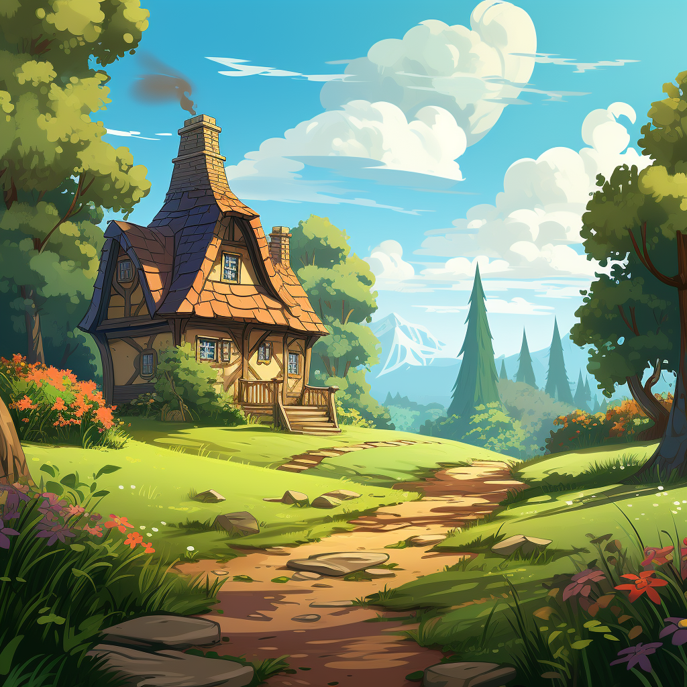

ذات يوم مشمس، كان الشقيقان، ليلي وبن، في مغامرة لزيارة منزل أجدادهما الريفي المريح. لقد كانوا سعداء بقضاء الوقت مع الجد والجدة، خاصة وأنهم كانوا دائمًا ينتظرون مفاجآت ممتعة.


عندما دخلوا من الباب الأمامي، رائحة حلوة لشيء لذيذ ملأت الهواء. "مممم، ما تلك الرائحة اللذيذة؟" سألت ليلي وقد ارتعش أنفها من الفضول.
وأضاف بن وهو يفرك بطنه الجائع: "إنها رائحة حلوة ولذيذة".
رحبت بهم جدتهم بابتسامة دافئة في المطبخ حيث كانت مشغولة بإعداد شيء خاص. قالت وعيناها تتلألأ من البهجة: "مرحبًا يا أحبائي الصغار! سأقوم بإعداد بعض الحلوى لكما".
انضم ليلي وبن بفارغ الصبر إلى جدتهما على طاولة المطبخ، على استعداد للمساعدة. لقد رأوا أوعية من الدقيق والزبدة والبيض، ولكن كان هناك شيء مفقود. "الجدة، أين السكر؟" سأل بن وهو يعقد جبينه في ارتباك.
"نعم يا جدتي، كيف يمكننا صنع الحلويات بدون سكر؟" دخلت ليلي في حيرة بنفس القدر.
ضحكت الجدة بهدوء ووصلت لزجاجة من الشراب الذهبي. "آه يا أعزائي، نحن نستخدم شيئًا حلوًا ولكنه أكثر صحة من السكر. نحن نستخدم التمر!"
اتسعت عيون ليلي وبن بالمفاجأة. "التمر؟ ولكن كيف يجعل الأشياء حلوة كالسكر؟" سأل بن، وقد أثار فضوله.
بدأت الجدة في الشرح عندما أرتهم التمر اللزج الممتلئ. "التمر هو هدية الطبيعة الحلوة لنا. فهو مليء بالسكريات الطبيعية وكميات كبيرة من العناصر الغذائية مثل الألياف والفيتامينات والمعادن. إنه ليس حلوًا فحسب، بل إنه صحي للغاية أيضًا!"
"حقا؟" هتفت ليلى مندهشة.
"نعم، في الواقع! التمر غني بالألياف، مما يساعد على إبقاء بطوننا سعيدة وهضمنا سلسًا. بالإضافة إلى ذلك، فهو مليء بالفيتامينات والمعادن مثل البوتاسيوم والمغنيسيوم وفيتامين ب 6، والتي تعد جميعها مهمة لبقاء أجسامنا "قوية وصحية،" أوضحت الجدة وعينيها تتلألأ بالحكمة.
بحماس، شاهدت ليلي وبن الجدة وهي تقطع التمر إلى قطع صغيرة وتخلطه في الخليط. قاموا معًا بتشكيل العجينة إلى كعكات لذيذة وكعكات صغيرة لطيفة.
كما يتم خبز الحلوى في الفرن، يمتلئ المطبخ برائحة المخبوزات الطازجة التي لا تقاوم. لم يتمكن ليلي وبن من الانتظار لتذوقهما.
عندما رن الموقت، أخرجت الجدة بعناية الحلوى ذات اللون البني الذهبي وتركتها تبرد على المنضدة. مع ترقب شديد، تناول كل من ليلي وبن قضمة.
"ط ط ط! هذه لذيذة جدًا!" صرخت ليلي وقد أضاء وجهها بالبهجة.
"إنها حلوة، تمامًا مثل السكر!" وأضاف بن بابتسامة كبيرة.
ابتسمت جدتهم بفخر. "أرأيتم يا صغاري؟ التمر ليس حلوًا فحسب، بل إنه يجعل حلوياتنا أكثر صحة وألذ طعمًا أيضًا!"
منذ ذلك اليوم فصاعدًا، تعلمت ليلي وبن تقدير حلاوة التمر وكيف يمكنهم الاستمتاع بالحلويات اللذيذة دون الحاجة إلى السكر المكرر. وأصبحت كل زيارة لبيت الجدة والجد مغامرة مثيرة مليئة بالمفاجآت الحلوة والمسرات اللذيذة، كل ذلك بفضل قوى التمر السحرية.

لقد انتهيت من القصة.
حان الوقت للعبة الاختبار!